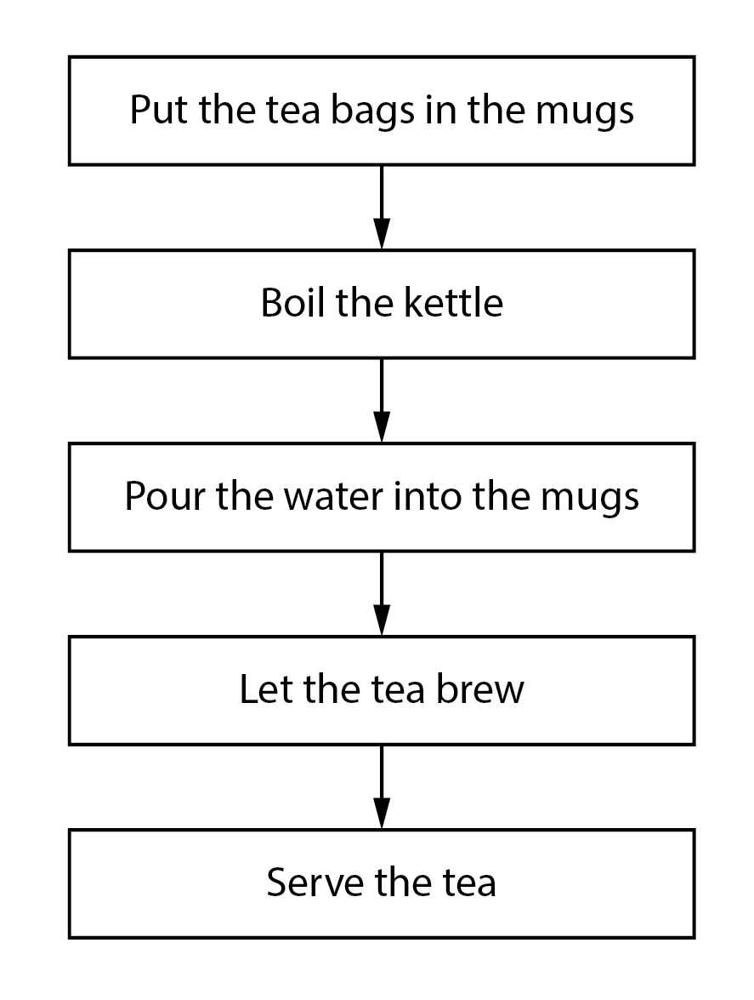
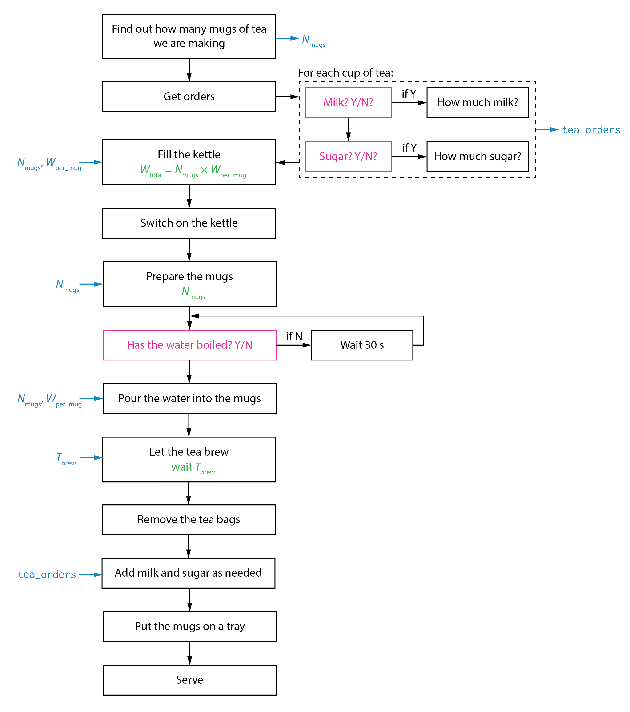
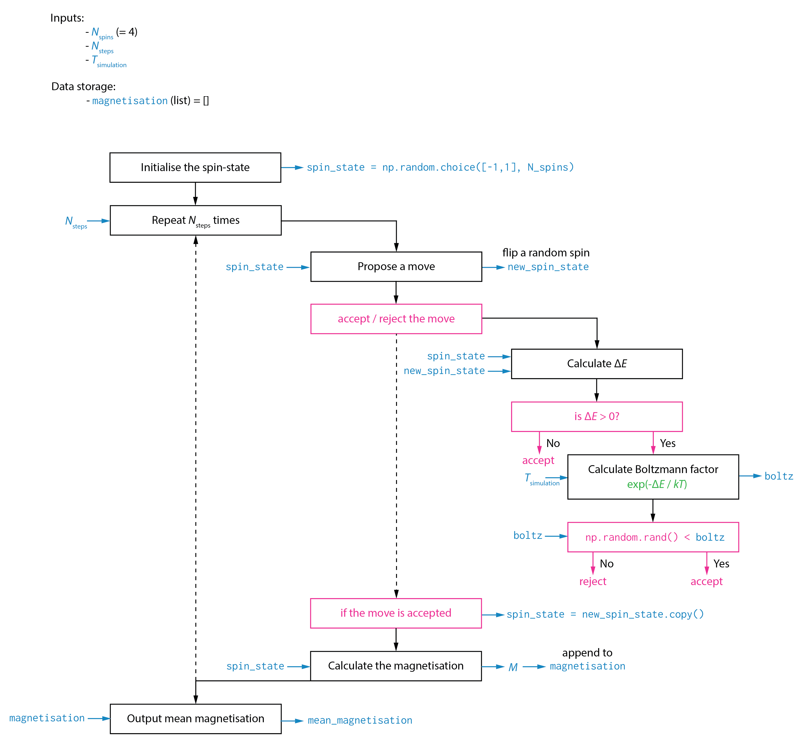

Planning Your Code and Writing A Code Schematic#
Just as it is a good idea to plan an essay or report before you start writing, it is a good idea to plan your code before you sit down and start typing.
In the case of an essay, planning allows you to separate thinking about what you want to say from how you are going to tell it. By creating a formal outline, you can identify exactly what points you want to make and how these will be organised to best communicate your overall idea to the reader. Once you have your outline, you can then start piecing together the words, sentences, and paragraphs that will make up your full first draft. While writing this first draft, you might realise that a particular part of your outline does not work as well as you had thought — you can modify your outline according to your new (hopefully better) idea and then return to your writing.
As is the case for any moderately complex project, writing code benefits from planning. While it can be tempting to immediately start writing bits of code as you think through a problem, this can result in frustration and lost time as you get stuck in dead ends, or solve what you thought the problem was, rather than the real problem, or, halfway through, you realise that you do not actually know how to implement a critical step.
In addition to saving you time and tears, planning your code will also help you to get better at programming. Writing a detailed code plan requires thinking through a complex problem and identifying how to deconstruct it into a sequence of well-defined, smaller, simpler problems that you know how to solve. This skill allows programmers to work on highly complex problems, as they are able to break them apart into small sub-problems that can be solved and then recombined.
Like planning for any project, there are lots of possible ways to approach planning your code. In this course, we will cover an approach we call a code schematic — this is a document that is analogous to a detailed outline of an essay. Once written, a good detailed outline could be given to a second writer, and, providing they are reasonably competent, they could then produce an essay that makes the intended argument, even if the phrasing and writing style might be different. Similarly, one way a code schematic could be considered “good” would be if it could be given to a second programmer, who could then produce a code implementation that solves the original problem, working only from the schematic.
A code schematic breaks a coding problem into a sequence of smaller steps and defines how these should be combined or linked. Because computers cannot think for themselves, a clear code schematic should include enough detail and specificity that there is no ambiguity about what each step of the code should do or how it should be done.
We can illustrate this idea with the example of a relatively simple non-computational task — making tea.
Here is a simple “code schematic” that attempts to solve this problem:
Put the tea bags in the mugs
Boil the kettle
Pour the water into the mugs
Let the tea brew
Serve the tea.
We could also present this as a flow-chart:
{kind=link}
This outline might be sufficient if you are trying to instruct another person, but is insufficient to instruct a computer. Looking at the schematic above, we might start to identify points that would benefit from further specification. For example:
How many mugs of tea are we making?
How long should the tea brew for?
How much milk should we add?
Did we consider sugar / no sugar?
Did we forget to say that the tea bags should be removed before serving?
Let us try again, with a more detailed plan:
Find out how many mugs of tea we are making → \(N_\mathrm{mugs}\)
For each mug of tea, find out: →
tea_orders× \(N_\mathrm{mugs}\)Milk? (Y/N)
If Y, then how much milk? →
tea_orders[milk]
Sugar (Y/N)
If Y, then how much sugar? →
tea_orders[sugar]
Fill the kettle.
Use enough water: \(= N_\mathrm{mugs}\) × \(W_\mathrm{mug}\)
Switch on the kettle
Prepare \(N_\mathrm{mugs}\) mugs.
Put 1 teabag in each mug.
Has the water boiled? Y/N?
If Y, go to step 7.
If N, wait 30 seconds, then go to step 6.
Pour \(W_\mathrm{mug}\) from the kettle into each mug.
Let the tea brew.
Wait \(T_\mathrm{brew}\) minutes. Set this before starting.
Remove the tea bags from the mugs.
For each mug:
Add milk and sugar as per
tea_orders.
Put the mugs on a tray.
Serve your thirsty guests.
or, as a flow chart:
{kind=link}
While this example is somewhat unserious (and might have offended those of you with strong opinions about the correct way to make tea) it illustrates several key points. The second “schematic” gives a much better description of the sequence of steps to be performed. It also notes what information is used or produced at each step and, where this is helpful, how this information is used. Some steps are broken down into sub-steps (e.g., what to ask when taking the tea orders). There are also places where the path we follow depends on the current conditions, or on information from another step (Has the water boiled? Y/N).
The second example is much more complete as a specification for what someone would actually need to do to complete the task, and is much closer to the information you would need to provide if you wanted someone who had never made tea before to do this.
Now let us look at an actual example for a coding problem. In this case, a Metropolis Monte Carlo simulation of a 4-spin Ising model:
{kind=link}
The level of detail is somewhat a matter of personal taste, but a good rule of thumb is to think about whether someone else could produce working code if they only had your code schematic to work from?
Some points to note from this example:
It specifies initial variables that need to be set, and whether they have certain values.
It shows how data is stored and used throughout the calculation. For specific steps, data inputs and outputs are shown.
When a step is relatively complex, it is broken down into sub-steps: e.g., &lqduo;accept / reject the move“
Snippets of minimal Python code are included where particular functions are being used to perform actions (e.g.,
np.random.choice([-1, 1], n_spins)orspin_state = new_spin_state.copy().
Does this schematic meet the goal of being sufficient for someone to write functional code from? Not entirely. It would be improved if it included specifications for the calculation of \(\Delta E\) (this involves calculating the energy for the current and new spin states — how is the energy calculated?) and for the calculation of the magnetisation (the schematic indicates this depends on the current spin state, but how?)
For your own coding projects, the level of detail you include and which points you choose to explicitly list out are up to you. With experience you will develop a feel for whether including something is necessary and useful or too much information. For the purposes of your assessment, plase refer to assessment criteria.